Dal prompt alla pratica Terraviva · Matteo Oliveri
Cosa porterete a casa
01
Il prompt
Scrivere una richiesta strutturata e migliorarla per iterazioni.
02
Il contesto
Costruire il contesto del vostro studio: servizi, tono, modelli, normativa.
03
Le regole
Sapere cosa non affidare all'AI e come dichiararne l'uso al cliente.
Tre capacità, non una lista di strumenti.
Da dove partiamo
Alzata di mano
?
Chi usa ChatGPT, Claude o Gemini almeno una volta a settimana?
?
Chi ha un account a pagamento?
?
Chi l'ha usato per un documento consegnato a un cliente?
Gli strumenti di cui parleremo
Claude
ChatGPT
Gemini
Gemini Notebook
Perplexity
Copilot
Le Chat
DeepSeek
Ollama
Programma
01
Capire lo strumento
15'
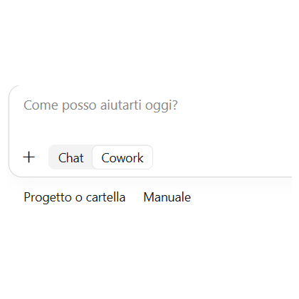
02
Claude, in pratica
15'
03
Il contesto
40'
04
Il prompt
30'
05
Casi d'uso nello studio
30'
06
Gemini Notebook
10'
07
Usare l'AI in modo corretto
15'
08
Vibe coding
10'
B
Dimostrazione dal vivo
60'
Pausa di 10' dopo il blocco 4
01
Capire lo strumento
Come ragiona un modello linguistico, dove aiuta e dove inciampa.
Una macchina che completa le frasi
«La siepe campestre è composta da specie arbustive
autoctone→disposte→su→due→file…»
Ogni parola è la più probabile dopo tutte quelle che la precedono
Quale parola viene dopo?
Probabilità di esempio, a scopo illustrativo
Conoscenza ferma a una data
Sa moltissimo, ma solo fino al suo addestramento.
Non legge la norma vigente
Se non gli date il testo o la ricerca web, cita a memoria.
Non conosce il vostro studio
Clienti, modelli, stile: finché non glieli date, non esistono.
Molte app aggiungono strumenti: ricerca web, lettura di file e immagini, calcolo. Li vediamo tra poco.
Haiku corre, Sonnet bilancia, Opus approfondisce
Haiku
Rapidità e grandi volumi
Estrazioni semplici, classificazioni, riassunti brevi e prime bozze.
Più rapido e meno costoso Più facile che perda un'eccezione
Sonnet
Equilibrio per il lavoro quotidiano
Analisi di documenti, scrittura professionale e compiti articolati.
Buon equilibrio generale Non sempre basta per i casi più sottili
Opus
Problemi difficili e più passaggi
Eccezioni, confronti complessi, pianificazione e revisioni critiche.
Maggiore capacità Di norma più lento e più costoso
Non è una classifica: è una scelta tra qualità, tempo e costo
Il modello è il motore; ricerca, file e codice sono gli attrezzi
Il modello genera il testo; l'app gli dà gli strumenti per lavorare.
WEB
Cerca sul web
Trova la norma aggiornata e indica la fonte.
FILE
Legge i file
PDF, Word ed Excel; alcune app anche audio e video.
VISTA
Guarda le immagini
Foto di campo, planimetrie, schermate.
CALCOLO
Esegue codice
Calcoli, tabelle, grafici, file Word ed Excel.
IMMAGINI
Crea immagini
Rendering e illustrazioni: non tutte le app.
Gli attrezzi appartengono all'app e al piano, non al modello. Riducono gli errori, non li eliminano.
Un modello si sceglie su sei caratteristiche
01
Dimensione e capacità
Comprende sfumature, eccezioni e richieste con più passaggi?
02
Contesto
Quanti documenti e istruzioni può considerare nello stesso lavoro?
03
Velocità
Quanto impiega a iniziare e completare una risposta?
04
Costo e limiti
Quanto costa usarlo e quante richieste permette il piano?
05
Strumenti
Quali attrezzi offre l'app: web, file, immagini, codice? (slide precedente)
06
Dove gira
Cloud o PC locale: quali prestazioni e quale controllo sui dati?
Affidabilità: provarlo su un vostro compito reale e verificare il risultato.
Scrive bene, ma non sa quando non sa
Bravo a…
Debole su…
Scrivere, riassumere, riformulare
Riferimenti normativi precisi
Estrarre dati da documenti lunghi
Numeri e calcoli non verificati
Confrontare testi e trovare mancanze
Informazioni recenti o locali (senza ricerca web)
Proporre strutture e alternative
Sapere quando non sa
Demo · l'allucinazione
Prompt · Llama 3 (8B) sul nostro PC, senza ricerca web
Citami tre sentenze del Consiglio di Stato che
riguardano la Valutazione di Incidenza per la
realizzazione di siepi in una ZSC. Per ciascuna
indica numero, anno e principio affermato.
PREVEDETE Quali di queste sentenze esistono davvero?
Quando non sa, spesso inventa. Con sicurezza.
Prova reale del 07/11/2026 · Ollama, nessuno strumento attivo
Demo · la stessa domanda, con la ricerca web
Claude Sonnet 5.5 · ricerca web attiva
«Non ho trovato nessuna sentenza del Consiglio di Stato che riguardi specificamente la realizzazione di siepi in una ZSC. […] Preferisco non attribuire a una sentenza un principio che non ha affermato.»
Poi propone tre sentenze sulla VIncA in generale e chiude: «Prima di citarle, controlla il testo integrale.»
PREVEDETE Questa volta esistono?
Con gli attrezzi è più prudente. La verifica resta vostra.
Prova reale del 07/11/2026 · claude.ai
Ricerca approfondita: un rapporto, non una risposta
Ricerca web
Poche ricerche, risposta in pochi secondi
Per una data, un riferimento, una notizia
È quella di S08A
Ricerca approfondita · in Claude «Research»
Molte ricerche in sequenza, poi un rapporto con i link alle fonti
In Claude: + → Research, con la ricerca web attiva, nei piani a pagamento
In ChatGPT e Gemini si chiama Deep Research
Prompt d'esempio
Ricostruisci il quadro vigente in Lombardia sulla compensazione per la trasformazione del bosco:
norme, delibere attuative, importi aggiornati. Per ogni punto il link alla fonte ufficiale.
Distingui ciò che è vigente da ciò che è stato abrogato o modificato.
Un rapporto con trenta link non è trenta fonti verificate: aprite almeno quelle su cui firmate.
L'AI propone, il tecnico verifica e firma.
Vale per norme, numeri, specie, superfici.
Ogni strumento ha capacità diverse: si sceglie in base al compito
Strumento
Punto forte per uno studio tecnico
Crea file
Cerca sul web
Legge immagini
Crea immagini
Sul PC
ChatGPT
Uso generale, immagini, agente che lavora sul computer (GPT-6 Astra)
●
●
●
●
–
Claude
Documenti lunghi, scrittura curata, file Word, Excel e PDF
●
●
●
–
–
Gemini
Google Drive e Gmail, immagini, legge anche video e audio
●
●
●
●
–
Copilot
Ricerca web con citazioni, integrato in Windows ed Edge
n.v.
●
●
●
–
Le Chat
Mistral, europeo: ricerca web con fonti, immagini
n.v.
●
●
●
–
Perplexity
Ricerca con le fonti; nel Pro sceglie tra più modelli
◐
●
n.v.
◐
–
Gemini Notebook
Risponde solo sulle fonti caricate: normativa, piani
n.v.
●
●
n.v.
–
Ollama
Modelli aperti sul vostro PC: i dati non escono
–
n.v.
●
–
●
DeepL
Traduce documenti mantenendo l'impaginazione
●
–
n.v.
–
–
noScribe
Trascrive le riunioni e separa le voci, sul PC
●
–
–
–
●
● disponibile, anche gratis con limiti · ◐ solo a pagamento · – no · n.v. non verificato Le capacità dipendono dall'app e dal piano, non dal modello · situazione al 07/11/2026
02
Claude, in pratica
Usciamo dalle slide: lo strumento che useremo per il resto della giornata.
Tre porte d'ingresso, un solo account
Web
claude.ai
Da qualsiasi computer, senza installare nulla. È il punto di partenza.
App desktop
Windows e Mac
In più: legge file e cartelle del computer, usa il browser, le estensioni, una finestra rapida sopra le altre app e Claude Code.
SOLO DESKTOP · LINUX IN BETA
Telefono
iOS e Android
Modalità vocale per parlarci, dettatura, foto da analizzare, avviso quando un compito è finito.
Chat, progetti, memoria, skill e connettori sono gli stessi ovunque: si comincia sul telefono e si continua al computer.
DAL VIVOAprire la stessa chat sul web e nell'app desktop. Mostrare l'app sul telefono, se c'è un modo per proiettarla.
Tutto parte dalla casella
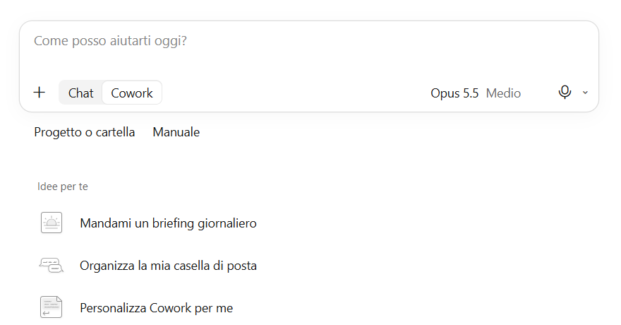
1
2
3
4
5
6
1
La casella: si scrive, si incolla, si trascinano i file
2
«+»: allegati, ricerca, memoria per questa chat
3
Chat · Cowork: risposta o compito delegato (S17A)
4
Modello e quanto deve pensare (S06A, S27A)
5
Microfono: dettatura (S14A)
6
Progetto o cartella su cui lavorare (S17)
DAL VIVOUna domanda semplice. Poi cambiare modello e livello di ragionamento, rifare la stessa domanda e confrontare.
La barra laterale: dove ritrovate il lavoro
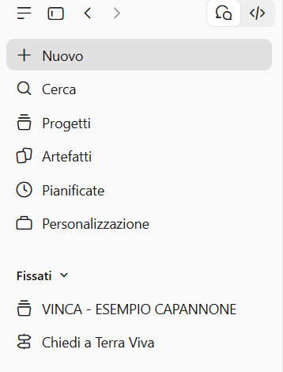
Nuovo · Cerca
Una chat nuova; cercare tra quelle passate
Progetti
Una cartella per pratica, con istruzioni e file (S17)
Artefatti
Documenti, slide e pagine prodotti da Claude (S17B)
Pianificate
Compiti che partono da soli a un'ora stabilita (S17H)
Personalizzazione
Skill, connettori e plugin (S17D-S17G)
Fissati · Chat
Le chat e i progetti da tenere a portata di mano
In alto, le due icone passano dalla chat a Claude Code, il banco di lavoro per programmare.
DAL VIVOAprire Progetti e Artefatti; cercare una chat di ieri con una parola che ricordate.
Le impostazioni: cosa si trova dove
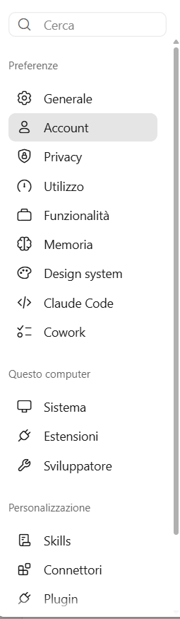
Voce
Cosa trovate
Ne parliamo in
Account
Le istruzioni per Claude, valide in ogni chat
S16
Privacy
Se le vostre chat servono ad addestrare i modelli
S41A
Memoria
Cosa ricorda tra una chat e l'altra
S18
Questo computer
Sistema ed estensioni: solo nell'app desktop
S17D
Personalizzazione
Skill, connettori, plugin
S17D-S17G
DAL VIVOAprire le impostazioni e mostrare dove sono queste voci, senza modificarle: ci torniamo quando servono.
Nella nuova esperienza, Chat e Cowork sono un unico Claude
Rilascio graduale da settembre 2026
Domanda rapida
Restate nella conversazione
Spiegare un concetto
Riformulare una mail
Confrontare due testi
Preparare una prima bozza
Compito delegato
Descrivete il risultato
Più passaggi e più file
Ricerca e uso di applicazioni
Produzione di documenti finiti
Lavoro lungo o programmato
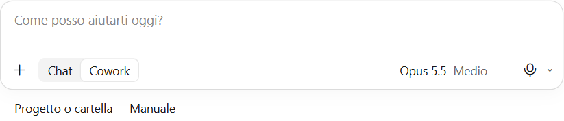
La stessa casella di testo. Oggi c'è ancora il selettore Chat · Cowork; nella nuova esperienza scompare ed è Claude a decidere se basta rispondere o se deve organizzare ed eseguire un lavoro.
03
Il contesto
La qualità della risposta dipende da quello che gli date.
Il modello legge molto più del vostro prompt
Stessa domanda, due risposte.
Cosa è cambiato? Solo il contesto.
Demo · la mail «a secco»
Prompt
Scrivi una mail a un cliente
per chiedergli dei documenti.
Nessun dato sul cliente, sulla pratica, sui documenti o sulla scadenza.
Risposta · Claude Sonnet 5.5 (estratto)
Oggetto: Richiesta documentazione – [nome pratica/progetto]
Gentile [Nome Cliente],
per poter procedere con [nome pratica/progetto], avremmo bisogno dei seguenti documenti:
1. [Documento 1, ad es. visura camerale aggiornata]
2. [Documento 2, ad es. planimetria dell'area/immobile]
3. [Documento 3, …] 4. [Documento 4]
Potrebbe inviarci la documentazione, preferibilmente in PDF, entro il [data]? Così rispetteremo le tempistiche previste per [scadenza/adempimento].
[…] Cordiali saluti, [Nome Cognome] · [STUDIO] · [Telefono]Posso adattarla meglio se mi indichi: il tipo di pratica e i documenti, il tono, la scadenza, se è un primo contatto o un sollecito.
Prova reale del 10/11/2026 · nessuno strumento attivo
PROBLEMA Corretta, ma vuota: undici segnaposto. Quali documenti, per cosa, entro quando: lo chiede lui a voi.
Demo · la stessa mail con il contesto
Prompt
Sono un agronomo di uno studio tecnico. Sto preparando
la Valutazione di Incidenza per l'ampliamento di un
capannone agricolo del cliente [NOME AZIENDA AGRICOLA],
vicino al sito [SITO NATURA 2000].
Scrivi una mail al titolare, che non è un tecnico,
per chiedergli:
- la planimetria di progetto in formato dwg o pdf;
- le foto recenti dell'area, soprattutto dei filari
lungo il fosso;
- il calendario previsto dei lavori.
Mi servono entro il[DATA] perché la Provincia
ci ha dato 30 giorni per le integrazioni.
Tono cordiale e diretto, frasi brevi, niente termini
tecnici non spiegati. Massimo 12 righe.
Risposta · Claude Sonnet 5.5
Oggetto: Ampliamento capannone: 3 cose che ci servono entro [DATA]
Buongiorno [Nome],
sto preparando lo studio che la Provincia richiede per l'ampliamento del capannone di [NOME AZIENDA AGRICOLA]. Serve a dimostrare che i lavori non disturbano l'area protetta vicina ([SITO NATURA 2000]).
La Provincia ci ha dato 30 giorni per completare i documenti. Mi servono quindi i seguenti materiali entro [DATA]:
1. La planimetria di progetto (il disegno dell'ampliamento), in formato DWG o PDF.
2. Alcune foto recenti dell'area, soprattutto delle file di alberi e siepi lungo il fosso. Vanno bene anche quelle scattate col cellulare.
3. Il calendario previsto dei lavori, anche di massima: quando iniziano e quanto durano.
Se qualcosa non è chiaro, mi chiami pure.
Grazie per la collaborazione e cordiali saluti,
[Nome e cognome]
Prova reale del 09/11/2026 · nessuno strumento attivo
Chi scrive · a chi · cosa · perché · entro quando · tono
Meglio allegare un file che incollare il testo, e meglio in Markdown
Word con formattazione
Profilo dello studio
Servizi
• Valutazione di Incidenza • Progettazione del verde
Tono
Professionale, sobrio, senza enfasi.
Lo stesso testo in Markdown
# Profilo dello studio## Servizi
- Valutazione di Incidenza
- Progettazione del verde
## Tono
Professionale, sobrio, senza enfasi.
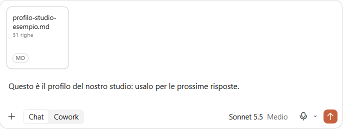
Il file si trascina nella casella
Allegare un documento è meglio che incollare il testo. Il Markdown è testo semplice: # titoli, - elenchi.
Quello che direste in ogni chat, ditelo una volta nelle istruzioni
Quello che direste in ogni chat, ditelo una volta sola.
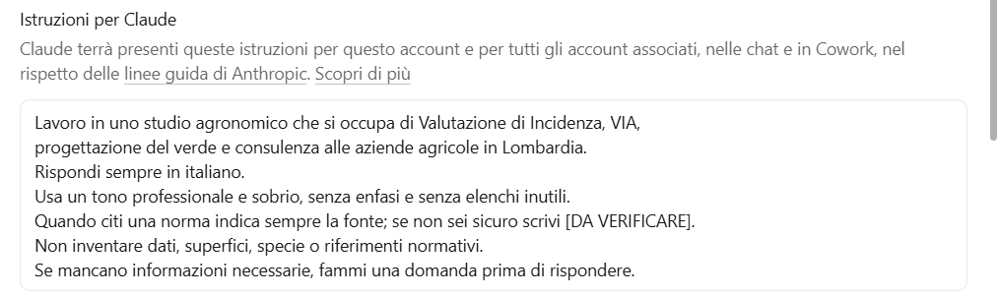
Claude · Impostazioni → Account → Istruzioni per Claude
Un progetto per pratica: istruzioni e file sempre presenti
Una «cartella» per ogni cliente o tipo di lavoro, con file e istruzioni sempre presenti.
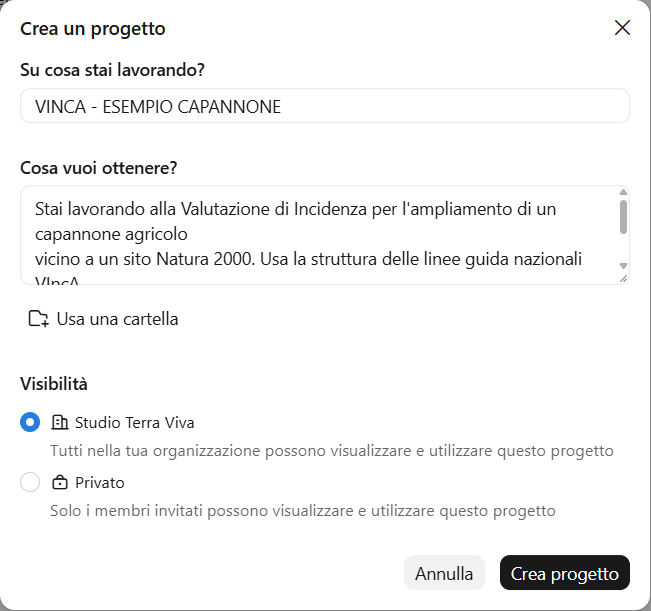
Istruzioni · «Cosa vuoi ottenere?»
«Stai lavorando alla VIncA per… Usa la struttura delle linee guida…»
File
Relazione vigente · richiesta di integrazioni · planimetria · formulario del sito
Chat
Risposta punto 1 · risposta punto 2 · lettera di accompagnamento
Visibilità
Tutta l'organizzazione oppure solo gli invitati
Esempio: progetto «VIncA — [nome cliente]»
Progetto, conversazione e Artifact hanno ruoli diversi
1CONTENITORE
Progetto
Raccoglie istruzioni, file, memoria e attività riferiti alla stessa pratica.
USARLO · lavoro che continua nel tempo
2LAVORO
Conversazione
È il singolo incarico: una verifica, una lettera, un confronto o una ricerca.
USARLA · un obiettivo preciso
3RISULTATO
Artifact
Un prodotto autonomo, modificabile e condivisibile: documento, slide, dashboard o piccolo strumento.
USARLO · qualcosa da riaprire o consegnare
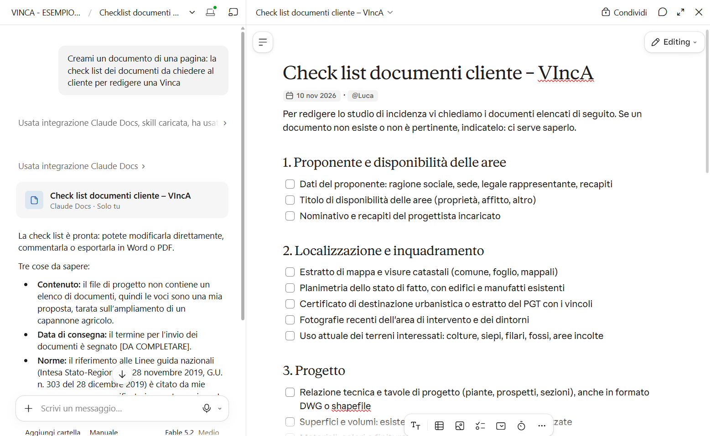
1
2
3
Claude Design è il laboratorio visivo degli Artifacts: mockup, prototipi, one-pager e pagine web, modificabili direttamente sulla tela e coerenti con il design system.
Un Project separa la pratica, ma non sempre tutta la memoria
Separazione operativa
Un cliente, un Project
File della sola pratica
Istruzioni dedicate
Conversazioni collegate
Memoria appresa nel Project
Separazione completa
Controllate la memoria dell'account
Se la pratica deve restare isolata anche dalle chat esterne ai Project, disattivate Use account memory nelle impostazioni del progetto.
Verificare l'opzione nel menu Memory
Regola dello studio: il confine organizzativo va configurato; il nome del Project, da solo, non è una garanzia di riservatezza.
Un connettore è un MCP già pronto da usare
MCP · lo standard
La lingua comune
Definisce come Claude può trovare dati e usare strumenti esterni. È come lo standard di una presa.
Serve conoscerlo solo per collegamenti personalizzati
Connettore · il prodotto pronto
L'adattatore installato
Collega Drive, Gmail, Slack, Microsoft 365 o altri servizi: Claude può cercare dati e, se autorizzato, compiere azioni.
Customize → Connectors · nessun terminale
Regola pratica: se il servizio è nella directory, installate il connettore; create un MCP solo per uno strumento interno o non disponibile.
Prima scegliete l'accesso; poi decidete quanta autonomia concedere
01 · STRUTTURATO
Connettore
Claude usa funzioni definite dal servizio: cercare, leggere e, se autorizzato, aggiornare dati.
PRIMA SCELTA · più affidabile e controllabile
02 · INTERFACCIA WEB
Browser
Claude opera su un sito già autenticato quando non esiste un connettore adatto.
SECONDA SCELTA · controllare ogni passaggio
03 · SCHERMO
Computer use
Claude vede schermate e controlla applicazioni desktop. È il livello più ampio e più delicato.
ULTIMA SCELTA · cartella e app dedicate
Inviare, cancellare, condividere o pubblicare: mantenete una conferma manuale prima dell'azione.
La skill insegna il metodo; il plugin prepara il kit
Skill · una procedura
«Fallo sempre così»
Istruzioni, modelli e risorse per eseguire in modo coerente un compito ripetibile.
SEGNALE State incollando per la terza volta lo stesso procedimento.
Esempio: /prepara-risposta-integrazioni
Plugin · un kit installabile
Metodo + strumenti
Riunisce skill, connettori e assistenti specializzati per un ruolo o un flusso di lavoro.
SEGNALE Il metodo va condiviso con tutto lo studio.
Esempio: plugin «Studio agronomico»
Direttamente nell'app: Customize → Skills, Plugins e Connectors.
Una skill o un plugin va valutato come un programma
01 · Provenienza
Fonte affidabile
Autore noto, documentazione leggibile e aggiornamenti tracciabili.
02 · Permessi
Accesso minimo
Solo cartelle, servizi e azioni necessari al compito.
03 · Prova
Ambiente separato
Prima esecuzione su copie e dati non sensibili.
04 · Uscita
Azione reversibile
Backup e conferma prima di invii, cancellazioni o modifiche esterne.
SEGNALI D'ALLARME Richiede credenziali, accesso molto ampio o componenti che non sapete spiegare.
Un'attività programmata è una delega che continua senza di voi
Buoni candidati
Riepilogo settimanale delle scadenze
Monitoraggio periodico di fonti ufficiali
Stato delle pratiche da dati già strutturati
Organizzazione di file in una cartella dedicata
Condizioni di sicurezza
Obiettivo e fonti ben delimitati
Output sempre riesaminabile
Nessun invio esterno automatico
Controllo delle prime esecuzioni
Automatizzate la preparazione, non la decisione: Claude può predisporre il rapporto; il tecnico lo valida e decide cosa fare.
Partite dal bisogno, non dal nome della funzione
Una domanda, una spiegazione o una prima bozza
Conversazione
La stessa pratica continua in più giornate
Progetto
Serve un risultato autonomo da modificare o condividere
Artifact · Design se è visivo
Claude deve leggere o aggiornare un servizio esterno
Connettore · MCP se personalizzato
Ripetete sempre la stessa procedura
Skill
Procedura e strumenti vanno distribuiti al gruppo
Plugin
Compito complesso? Scrivete comunque l'obiettivo nella conversazione: nella nuova esperienza Claude organizza il lavoro necessario.
Quando la chat si allunga, si riparte da un riassunto
I segnali
Dimentica una decisione già presa
Ripete un errore già corretto
Mescola le versioni del testo
Le risposte si fanno lente
Il riassunto di passaggio
Prima di chiudere, scrivimi un
riassunto di passaggio:
- decisioni prese;
- dati confermati e da dove vengono;
- cosa resta aperto;
- file usati.
Lo incollo in una chat nuova.
I documenti stabili stanno nel progetto; il riassunto porta solo lo stato del lavoro.
La memoria aiuta, ma va controllata una volta al mese
Comoda, ma va controllata.
Ricorda informazioni tra una chat e l'altra: una volta al mese controllatela e cancellate ciò che è sbagliato o superato.
Il profilo dello studio è la prima cosa da scrivere
profilo-studio.md
# Profilo dello studio[NOME]## Chi siamo## Servizi e ambiti## Territorio di lavoro e normativa di riferimento## Clienti tipo## Tono di voce (frasi che usiamo / che non usiamo)
## Modelli di documento (relazione, offerta, mail)
## Regole (cosa non fare mai)
Il vero punto di partenza. Si allega a ogni progetto.
Caso vero · Il bosco di 27 ettari
Nuovo bosco in Emilia-Romagna · ottobre 2026 · cliente reso anonimo
Cosa ho chiesto
Aiutami a fare dei pensieri.
Devo fare un bosco su 27 ettari.
Regione Lombardia ricordo che prevede una
densità minima di 1300 piante per ettaro.
Corretto? Quanto prevede l'Emilia-Romagna?
Nessuna domanda sulla VIA. Nelle cartelle dello studio però c'era la normativa già salvata: schede VIA, Vademecum DNSH, criteri di screening dell'Emilia-Romagna.
→
Cosa mi ha risposto, senza che lo chiedessi
«Verifica di assoggettabilità a VIA. È il punto da non perdere. Per l'“iniziale forestazione di una superficie superiore a 20 ettari” la verifica è dovuta (All. IV, punto 1, lett. b, D.Lgs. 152/2006), e la soglia scende a 10 ha in aree protette e Natura 2000. Con 27 ha si supera.»
27 ha→19 ha
Il progetto è stato ridotto sotto la soglia, per non fare la verifica di assoggettabilità.
VERIFICA Soglia controllata sul testo vigente. Restano da escludere aree protette (soglia a 10 ha) e altri imboschimenti vicini, da sommare.
Un Claude per tutto lo studio
Piani Team ed Enterprise
01 · PROGETTO CONDIVISO
Il contesto
Profilo dello studio, modelli di relazione, normativa regionale: in un progetto condiviso con i colleghi, con permesso di lettura o di modifica.
TUTTI PARTONO DAGLI STESSI FILE
02 · SKILL CONDIVISA
Il metodo
Una procedura dello studio, per esempio «verifica di completezza VIncA», condivisa con alcuni colleghi o pubblicata a tutta l'organizzazione.
TUTTI LAVORANO ALLO STESSO MODO
03 · AMMINISTRATORE
Le regole
Chi gestisce l'account decide cosa si condivide: può distribuire una skill a tutti o disattivare la condivisione dei progetti.
UNA PERSONA RESPONSABILE
Il collega nuovo, il primo giorno, trova già profilo, modelli e procedure dello studio.
04
Il prompt
Come chiedere, cosa dare, come correggere.
Sei domande a cui il prompt deve rispondere
01
Chi sei?
L'agronomo che segue la VIncA
02
Per chi è?
Il titolare dell'azienda, non un tecnico
03
Qual è l'obiettivo?
Tre documenti entro una data
04
Con che tono?
Cordiale e diretto, frasi brevi
05
Con quali vincoli?
Massimo 12 righe, niente termini non spiegati
06
Su quali materiali?
La lettera della Provincia, allegata
La mail che ne esce
Dettare invece di scrivere
Parlando si dà più contesto: chi è il cliente, cosa è successo, cosa vi preoccupa.
Dove si detta
Il microfono nella casella di Claude, ChatGPT e Gemini
Win + H: la dettatura di Windows, in qualsiasi programma
Dal telefono, tra un sopralluogo e l'altro
→
Poi una frase sola
Ti ho dettato a ruota libera.
Riordina quello che ho detto in un prompt
con le sei domande: chi sono, per chi è,
obiettivo, tono, vincoli, materiali.
Se manca qualcosa, chiedimelo
prima di procedere.
VERIFICA Rileggete nomi, numeri e sigle: la dettatura sbaglia proprio quelli.
Una riga dà un testo generico; un prompt strutturato dà il vostro
Prompt povero
Scrivimi un paragrafo sulla
siepe di mitigazione.
Prompt strutturato
Agisci come un agronomo che scrive la relazione tecnica
di un progetto del verde.
Compito: scrivi il paragrafo "Descrizione dell'intervento
di mitigazione" per una siepe campestre lungo il confine
nord di un nuovo magazzino agricolo.
Dati:
- lunghezza 180 m, doppio filare sfalsato, sesto 1 m
sulla fila, 1,5 m tra le file;
- specie: biancospino, sanguinello, nocciolo, ligustro,
fusaggine, acero campestre, carpino bianco;
- obiettivo: schermatura visiva e continuità ecologica
con il fosso esistente.
Formato: un unico paragrafo di 150-200 parole,
linguaggio tecnico ma leggibile.
Non aggiungere specie o dati che non ti ho dato.
Le sei domande di S14: 01 chi sei «Agisci come…» · 03 obiettivo «Compito» · 06 materiali «Dati» · 04 tono e 05 vincoli «Formato» e l'ultima riga · 02 per chi è: manca, la aggiungiamo tra due slide.
Il prompt strutturato usa solo i dati che gli avete dato
Prompt povero · Claude Sonnet 5.5 (estratto)
La siepe di mitigazione è un elemento di vegetazione lineare […] progettato per ridurre l'impatto ambientale e paesaggistico di infrastrutture, impianti produttivi, parchi fotovoltaici, strade o insediamenti […]. Offre anche numerosi benefici ecologici: funge da corridoio ecologico […], contribuisce alla cattura di polveri sottili e CO₂, attenua il rumore […]. Specie autoctone come biancospino, prugnolo, corniolo, sanguinello, ligustro, alloro o lentisco a seconda dell'area geografica. […] Se ben progettata, la siepe rappresenta quindi una misura efficace e sostenibile.
Problema: va bene per qualsiasi progetto, quindi per nessuno. Nessun dato del nostro caso; non sa dove siamo e cita anche alloro e lentisco.
Prompt strutturato · Claude Sonnet 5.5 (estratto)
L'intervento prevede la realizzazione di una siepe campestre plurispecifica lungo il confine nord del nuovo magazzino agricolo, per uno sviluppo lineare di 180 m. L'impianto è articolato in un doppio filare sfalsato, con sesto di 1 m sulla fila e 1,5 m tra le file. […] La scelta floristica comprende biancospino, sanguinello, nocciolo, ligustro, fusaggine, acero campestre e carpino bianco. […] Lo sviluppo lineare della siepe, in relazione con il fosso esistente, le attribuisce inoltre la funzione di corridoio ecologico. […]
Rispettato: 174 parole su 150-200, solo le sette specie date, nessun dato aggiunto. Per avvicinarlo allo stile dello studio serve un esempio: è la slide successiva.
Prova reale del 10/11/2026 · stesso modello, due conversazioni separate
Un paragrafo dello studio vale più di dieci aggettivi
Due aggiunte al prompt di S20: lo stile dello studio e la domanda che mancava, per chi è.
Lo stile · un esempio vero
Scrivi con lo stesso stile di questo paragrafo,
tratto da una nostra relazione:
"""
[PARAGRAFO REALE DI UNA RELAZIONE DELLO STUDIO]
"""
02 · Per chi è, e cosa non deve essere
Il paragrafo deve permettere al tecnico
della Provincia di capire in 30 secondi
cosa si pianta, dove e perché.
Non deve sembrare un testo promozionale
e non deve contenere frasi generiche
sulla biodiversità.
«Professionale e sobrio» lo scrivono tutti. Un paragrafo vero mostra cosa intendete.
Tre frasi che rendono visibili gli errori
Tre frasi da mettere quasi sempre.
Non inventare dati, norme o specie che non ti ho fornito.
Se un'informazione manca, scrivi [DA COMPLETARE].
Se non sei sicuro di un riferimento, scrivi [DA VERIFICARE].
Se le avete già nelle istruzioni personalizzate (S16), valgono in ogni chat: non serve ripeterle.
Prima la citazione, poi la risposta
Prompt · bando di 73 pagine allegato
Domanda: quali spese generali sono ammesse
per la realizzazione e il ripristino
dei muretti a secco?
Prima riporta tra virgolette, una per riga,
tutte le frasi del documento che rispondono
alla domanda, con il numero di articolo.
Poi rispondi usando solo quelle frasi.
Se il documento non ne parla, scrivilo.
→
Claude Sonnet 5.5 · estratto
Frasi del documento (14)
Art. 5.5.1: «spese generali per progettazione e direzione lavori nella misura massima del 10% dell'importo complessivo»
Art. 7, tabella: «Muretti a secco 8%»
Risposta
«Il limite è però incoerente nel documento. […] È prudente fare riferimento all'8% dell'art. 7 (più restrittivo) e chiedere conferma all'amministrazione competente.»
Verificato sul bando: le due frasi ci sono, agli articoli indicati. Per controllare bastano due righe, non 73 pagine.
VERIFICA Con le citazioni sapete subito da dove viene ogni numero, e vedete le contraddizioni.
«Fammi delle domande»
Prompt
Devo preparare la relazione agronomica per
un permesso di costruire in zona agricola.
Non iniziare ancora a scrivere.
Prima fammi tutte le domande che ti servono
per fare un buon lavoro, una alla volta,
e aspetta la mia risposta.
Il modo più semplice per ottenere un prompt completo è farselo chiedere.
Le prime tre domande · Claude Sonnet 5.5
1. In quale comune e regione si trova l'intervento? Strumento urbanistico vigente e zona agricola (E1, E2…)?La disciplina delle zone agricole varia da regione a regione
2. Che tipo di intervento è previsto? Nuova costruzione, residenza, ampliamento, cambio d'uso… Con dimensioni indicative.La L.R. 12/2005, artt. 59-62, distingue le opere agricole da quelle residenziali
Capannone per ricovero attrezzi, circa 600 m², altezza 7 m.
3. Chi è il richiedente e che titolo ha? IAP, coltivatore diretto, società agricola? Proprietario o affittuario? Fascicolo aziendale aggiornato?L'art. 60 lega il permesso alla qualifica del richiedente
Prova reale del 10/11/2026 · risposte di esempio · domande riassunte
Il primo risultato è una bozza
Accorciare
Più breve: massimo
100 parole.
Asciugare
Togli gli aggettivi e le
frasi generiche, lascia
solo le informazioni
tecniche.
Correggere un punto
Il punto 3 non è
corretto: la siepe è a
doppio filare, non a
filare singolo. Correggi
solo quel punto.
Si corregge nella stessa chat, non si ricomincia da zero.
Se ha frainteso, correggete la domanda
Accumulare correzioni
«Scrivi la mail per il Comune…»
«No, era per la Provincia»
«Ancora no, troppo formale»
«Ti avevo detto entro il 30»
Il modello rilegge anche tutte le versioni sbagliate.
Modificare il messaggio
Passate sul vostro messaggio e scegliete Modifica
Correggete la richiesta e rinviate
La risposta sbagliata esce dalla conversazione
Le versioni restano consultabili con le frecce ‹ 1/2 ›
Ritocchi alla bozza: nella stessa chat. Domanda fraintesa: si corregge la domanda.
Ragionare prima di rispondere migliora la scelta, non la garantisce
Prompt · confronto tra alternative
Devo scegliere tre specie arbustive per una siepe
su terreno argilloso, con ristagno invernale,
in pianura in Lombardia.
Prima proponi sei candidate,
poi per ciascuna indica pro e contro rispetto
a queste condizioni,
poi scegli le tre migliori spiegando il motivo.
Usa solo specie autoctone della Lombardia
e segnala [DA VERIFICARE] se non sei sicuro
dell'autoctonia.
→
Claude Sonnet 5.5 · estratto
Sei candidate, con pro e contro
Sanguinello · pallon di maggio · biancospino · fusaggine · salice cenerino · frangola. «Non ho dubbi sull'autoctonia di nessuna, quindi non uso [DA VERIFICARE].»
Le tre migliori
Sanguinello: «la spina dorsale della siepe»
Pallon di maggio: per le zone più ristagnanti
Biancospino: «grande rusticità su argilla»
Riserva: fusaggine, al posto del biancospino se vicino ci sono frutteti (colpo di fuoco batterico).
Controllo sulle schede ERSAF: pallon di maggio, salice cenerino e frangola «anche con ristagni» ✓ Biancospino: «xerofila, mesofila», non è una specie da ristagno. Fusaggine: terreno «non soggetto a ristagno idrico». Eppure è la riserva.
VERIFICA Autoctonia ed esigenze si controllano sulle schede regionali, non sulla parola del modello.
Quanto deve pensare? Lo decidete voi
01 · LOW
Poco
Mail, riassunti, riformulazioni, prime bozze. Risposta rapida.
IL LAVORO DI TUTTI I GIORNI
02 · MEDIUM · HIGH
Il giusto
Analisi di documenti, tabelle, confronti tra testi. Il menu segna con «Default» il livello consigliato per il modello.
PARTITE DA QUI
03 · EXTRA HIGH · MAX
A fondo
Scelte tra alternative, casi con eccezioni, revisioni critiche. Più lento, consuma prima i limiti del piano.
QUANDO L'ERRORE COSTA
In Claude: menu del modello, accanto al pulsante di invio → «Effort». Sonnet 5.5 e Opus 5.5 ragionano sempre: l'impegno decide quanto a fondo.
L'AI migliora il vostro prompt e vi spiega cosa ha cambiato
Prompt
Sei un esperto di prompt. Migliora questo
prompt perché produca un risultato preciso
e utilizzabile in una relazione tecnica.
Aggiungi ruolo, contesto, formato e vincoli,
poi spiegami in 3 righe cosa hai cambiato.
Prompt da migliorare:
"Fammi una tabella delle prescrizioni
dell'autorizzazione"
Ti allego l'autorizzazione [tipo] rilasciata da [ente], atto n. [numero]. Serve per [scopo], la leggerà [destinatario]
COMPITO
Estrai tutte le prescrizioni e organizzale in una tabella
FORMATO
N. · Matrice · Prescrizione · Riferimento · Scadenza · Soggetto obbligato · Ente · Note; in fondo i «Punti da verificare»
VINCOLI
Solo dati del documento · «non specificato» se manca · solo prescrizioni vincolanti · limiti e unità come nel testo · una riga per prescrizione
Cosa ho cambiato
Ruolo e contesto: il modello calibra termini e dettaglio sull'uso nella relazione.
Formato: colonne, ordine e verifica finale, tabella riutilizzabile.
Vincoli: fedeltà al testo, meno invenzioni e imprecisioni.
Prova reale del 09/11/2026 · sintesi fedele, testo integrale negli esempi del corso
La scheda del buon prompt
Le sei domande
01 · Chi sei?
02 · Per chi è?
03 · Qual è l'obiettivo?
04 · Con che tono?
05 · Con quali vincoli?
06 · Su quali materiali?
E sempre
Un paragrafo dello studio come esempio di stile
Non inventare · [DA COMPLETARE] · [DA VERIFICARE]
«Se manca qualcosa, chiedimelo»
Da tenere accanto al monitor · è anche nella dispensa
Pausa
10 minuti
05
Casi d'uso nello studio
Input e output reali. Tutti i prompt sono nella dispensa.
Per ogni caso: il prompt, il risultato, cosa verificare
T
Pratiche
Completezza, prescrizioni, integrazioni
T
Agronomia e verde
Specie, siepi, rendering
T
Campo
Sopralluoghi, verbali
G
Gestione dello studio
Riunioni, bandi, offerte
T2 · La relazione è completa?
Prompt · con i due file allegati
Ti allego due documenti:
1) la nostra relazione di Valutazione di Incidenza;
2) l'elenco dei contenuti richiesti dalle linee guida.
Confronta i due documenti e prepara una tabella:
contenuto richiesto | presente sì/no/in parte |
dove si trova (capitolo e pagina) | cosa manca.
Non giudicare la qualità tecnica, verifica solo
la presenza dei contenuti.
Se un contenuto è trattato solo in parte, spiega
in una riga cosa manca.
Input · relazione VIncA + Allegato F lombardo
→
Claude Sonnet 5.5 · estratto della tabella
Contenuto richiesto
Presente
Cosa manca
Presa visione di obiettivi e misure di conservazione
In parte
Piano di gestione citato, ma nessuna dichiarazione esplicita
Distanza dal sito e connessioni ecologiche
In parte
Distanza solo indicativa («più di 4 km»), connessioni non analizzate
Documentazione cartografica
In parte
Solo carte di area vasta: mancano planimetrie e foto
Condizioni d'obbligo
No
Non trattate
Cronoprogramma
No
Nessun cronoprogramma
Trovato da solo: nella matrice del cap. 5 il codice del sito è diverso da quello usato nel resto della relazione.
26 voci: 6 sì · 10 in parte · 9 no · 1 n.a. · prova reale del 10/11/2026, documenti anonimizzati
Output · richiesto / presente / mancante
VERIFICA Le linee guida in ingresso devono essere quelle giuste: l'AI confronta, non sceglie la norma.
Fategli fare il funzionario
Prompt · la relazione di S31 allegata
Sei il funzionario istruttore dell'ente
competente che deve valutare la relazione
di screening di incidenza allegata.
Leggila con occhio critico e scrivi
le richieste di integrazione che
invieresti al proponente: numerate,
ciascuna con il motivo e il punto
della relazione a cui si riferisce.
Non riscrivere la relazione e non
giudicare il progetto.
S31 controllava se i capitoli ci sono. Qui si chiede se reggono.
→
Claude Sonnet 5.5 · 14 richieste (estratto)
Motivare la «non significatività»: la matrice dice «non significativo» a ogni voce, l'unico argomento è la distanza, «più di 4 km».
Scarichi: lavaggio di contenitori e 1.700 m² di piazzali, ma nessun recapito finale. Nel sito vivono pesci d'acqua dolce.
Distanza non misurata; un secondo sito citato e poi dimenticato.
Incidenti: incendio, sversamenti, serbatoio di carburante da 9.000 litri.
Mitigazioni: in fase di screening non bastano a escludere l'incidenza.
Trovato e verificato: 1.851,40 + 1.700,50 + 528,10 = 4.080 m², non i 4.178 dichiarati.
Decidete voi: dispersione delle emissioni e rumore, per uno screening a 4 km, sono richieste proporzionate?
T3 · La tabella di ottemperanza
Prompt · atto anonimizzato in PDF
Dal documento allegato estrai tutte le prescrizioni.
Prepara una tabella con: n. | testo della
prescrizione (sintetico) | articolo o paragrafo
dell'atto | scadenza o frequenza | chi deve farlo |
documento da produrre.
Riporta le scadenze esattamente come sono scritte
nell'atto.
Alla fine indica quante prescrizioni hai trovato,
così posso controllare di non averne perse.
→
Claude Sonnet 5.5 · estratto della tabella
n.
Prescrizione
Scadenza
Documento
1
Barriera verde continua di 20 piante lungo le recinzioni
Non indicata
Nel documento del n. 12
2-3
7 + 10 piante «autoctone» (Morus alba) nelle due aree verdi
Non indicata
Nel documento del n. 12
8
Monitoraggio della qualità dell'aria con centralina esterna
«ante operam e post operam (frequenza una tantum)»
Non indicato dall'atto
11
Nuova campagna di rilievi acustici
«Entro n. 6 mesi dall'avvenuta realizzazione del progetto»
Esiti dei rilievi
12
Sviluppare tutte le condizioni in un documento allegato al progetto (art. 208)
Con il progetto definitivo
Documento delle condizioni
Totale: 12 prescrizioni. E segnala: 20 piante nella barriera, ma le due aree ne elencano 7 + 10 = 17.
Decreto di esclusione dalla VIA, 2019, anonimizzato · prova reale del 10/11/2026
VERIFICA Il conteggio finale serve al tecnico per confrontare con l'atto. L'errore agronomico lo vedete voi.
T7 · Quante piante per la siepe?
Prompt
Siepe a doppio filare sfalsato, lunghezza 180 m,
sesto 1 m sulla fila.
Composizione in percentuale:
- [SPECIE A] 30%
- [SPECIE B] 25%
- [SPECIE C] 25%
- [SPECIE D] 20%
Calcola il numero di piante per specie, arrotondando
all'unità, e verifica che il totale torni.
Presenta il risultato in una tabella che posso
copiare in Excel. Mostra il calcolo.
E se lo stesso calcolo lo volessi come strumento da riusare?
Demo · calcolatore-siepe.html
Stesso calcolo, totale che torna sempre, tabella da copiare in Excel. Nato da tre righe di richiesta in italiano.
Ti allego l'Excel dei rilievi di attecchimento
2024-2026, una riga per pianta
(specie, anno, viva o morta).
Esegui il calcolo con il codice, non a mente:
- percentuale di fallanze per specie e anno;
- un grafico per specie;
- un file Excel con risultati e formule.
Mostrami il codice che hai usato
e quante righe hai letto.
→
Cosa cambia
Il conto lo fa un programma, non la stima del modello
Il numero di righe lette dice se ha letto tutto
Il codice si rilegge e si rilancia l'anno dopo
Esce un Excel da aprire e controllare
VERIFICA Restano vostri i dati di partenza e un paio di valori controllati a campione.
Dal PDF alla tabella Excel
Prompt d'esempio · PDF allegato
Ti allego il formulario standard del sito
Natura 2000. Estrai in un Excel la tabella
delle specie: una riga per specie, con
le stesse colonne del formulario.
Dimmi quante righe hai estratto
per ogni pagina.
Le celle illeggibili scrivile [DA VERIFICARE]:
non ricostruirle.
→
Funziona anche per
Elenchi di specie e di habitat
Computi e preventivi
Le prescrizioni di un'autorizzazione, una per riga
Gli allegati dei bandi
VERIFICA Contate le righe, rifate i totali, confrontate due righe a campione con il PDF.
T11 · Dal sopralluogo al verbale
Prompt · trascrizione automatica del sopralluogo
Questa è la trascrizione automatica della registrazione
che ho fatto durante un sopralluogo.
Trasformala in un verbale con queste sezioni:
data e luogo | presenti | stato dei luoghi | rilievi |
criticità | azioni da fare (chi, entro quando).
Non aggiungere informazioni che non sono nella
trascrizione.
Segna [DA VERIFICARE] le parole trascritte male
o i termini tecnici dubbi.
"""
[SPEAKER_01]: …ha fine vita della soluzione,
questa viene scaricata in una botanica nel
retrocapo… con il suo vaccino di contenimento…
c'è una cisterna di 30.000 litri… asserve il
gruppo elettronico.
"""
→
Il verbale · Claude Sonnet 5.5 (estratto)
Data e luogo · presenti
Data e luogo non indicati [DA VERIFICARE] · quattro voci, «senza nomi né ruoli».
Stato dei luoghi
Box di stoccaggio dei chimici esausti; la soluzione è scaricata in una «botanica nel retrocapo» [DA VERIFICARE]
Griglia e pendenza del piazzale verso l'impianto di trattamento in caso di sversamento
Cisterna di gasolio da 30.000 litri al servizio del «gruppo elettronico» [DA VERIFICARE]; travaso manuale
Criticità
Compatibilità acidi/basi nello stesso box
Alla domanda su prima e seconda pioggia non c'è risposta nella registrazione
Azioni
Nessuna azione assegnata: solo «schede di sicurezza in aggiornamento», chi e quando non indicati.
Circa 25 segnalazioni [DA VERIFICARE] · prova reale del 10/11/2026 · audit ambientale, dati anonimi
VERIFICA Nomi e misure. Le parole segnate si controllano riascoltando l'audio.
In campo bastano una foto e una domanda
Prompt d'esempio · foto scattata dal telefono
Foto di una siepe al secondo anno,
pianura lombarda.
Quali specie riconosci?
Per ciascuna dimmi quanto sei sicuro
e quali caratteri ti servono
per confermarla (foglia, gemma,
corteccia, frutto).
Ci sono piante morte o sofferenti?
Da cosa lo deduci?
→
In campo
Una foto e la domanda, scritta o a voce, dall'app sul telefono
In alcune app la fotocamera in diretta: si inquadra e si parla
Chiedete sempre il grado di sicurezza e i caratteri per confermare
Foto riservate: togliete la posizione GPS
VERIFICA È una prima ipotesi, non una determinazione: la specie si conferma con la chiave o con l'esperto.
Leggere tavole, planimetrie e appunti a mano
«L'area di intervento è cerchiata in rosso. Elenca gli elementi della rete ecologica e i vincoli che la interessano; per ognuno dimmi da quale voce della legenda lo deduci. Non misurare distanze.»
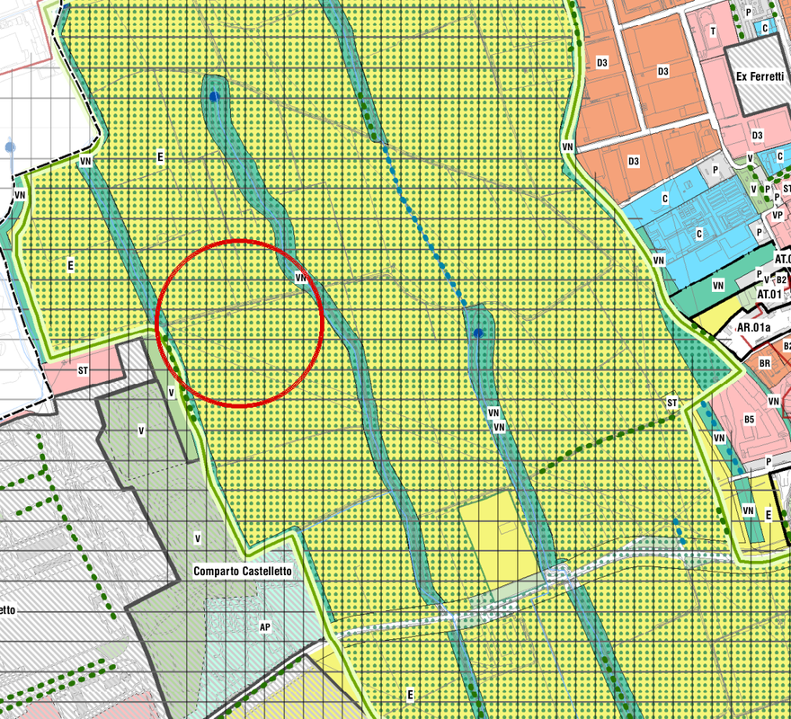
PGT · Rete ecologica comunale (tavola 1:5.000)
→
Claude Sonnet 5.5 · estratto
Legge con sicurezza
Verde naturalistico (VN) sul bordo · ambito agricolo E · perimetro del Parco Agricolo Sud
Dichiara il dubbio
«Livello della RER e dei gangli: la maglia è troppo fitta per contare le linee. Serve un controllo sulla tavola originale.»
La distanza dal fontanile (seconda prova)
«L'ordine di grandezza è tra 100 e 200 m. Sono ipotesi, non misure.»
Bene: separa ciò che legge da ciò che non distingue, e chiede la tavola originale.
Misurata sul PDF in scala: circa 370 m. Anche l'ordine di grandezza era sbagliato.
VERIFICA Legende e scritte sì; distanze e confini si misurano in QGIS (S48A), non su un'immagine.
G2 · Prima del verbale: registrare e trascrivere
01 · REGISTROCellulare al centro del tavolo, dopo aver avvisato i presenti.
02 · TRASCRIVO E SEPARO LE VOCIIl programma scrive «Speaker 1», «Speaker 2»…
03 · DO IL TESTO A CLAUDEVerbale, decisioni, attività: è la slide successiva.
Strumento
Costo
Dove lavora
Word · Trascrivi
incluso in Microsoft 365, 300 min al mese
cloud Microsoft
noScribe
gratuito, open source
sul PC
aTrain
gratuito, dal Microsoft Store
sul PC
Registratore Samsung
incluso nel telefono
sul telefono
Prompt · i nomi li date voi
Nella trascrizione allegata Speaker 1 è
[NOME, consulente] e Speaker 2 è
[NOME, tecnico comunale].
Sostituisci le etichette con i nomi.
Se un intervento non è attribuibile con
sicurezza, segnalo [DA VERIFICARE].
RISERVATEZZA Riunioni con i clienti: programmi sul PC o account aziendale, mai servizi cloud gratuiti.
G2 · Il verbale separa ciò che è deciso da ciò che è solo proposto
[00:00] Stiamo registrando delle idee per fare un corso di informazione di circa tre ore presso Terraviva… [01:01] Poi vorrei però iniziare subito a far vedere una parolamica delle principali e quindi a parlare di ChatGPT, di Cloud, di Gemini. [01:45] Infatti vorrei fare degli esempi dove… [01:50] Faccio vedere come lo so, gli scrivi questa mail, è un robot che funziona, ma se gli scrivi questa mail dando, enfatizzando questo aspetto oppure utilizzando un tono diverso, dando delle… eccetera eccetera… [03:56] Cosa ne dici della domanda? [04:02] Allora sì, io spiegherei anche proprio, per esempio una cosa è come strutturare il prompt, cioè andare proprio nel concreto, quindi come strutturare il prompt, spiegare anche la questione degli abstract. [08:29] Fatto che invece magari chat GPT e Gmd possono essere migliori per fare qualche produzione di immagini, [11:41] Se parli di minca, di via, di…
Dalla trascrizione allegata prepara un verbale con:
argomenti, decisioni prese, attività con responsabile
e scadenza, questioni aperte.
Distingui ciò che è stato deciso da ciò che è stato
solo proposto.
→
Il verbale · Claude Sonnet 5.5 (estratto)
Decisioni prese
Nessuna decisione formale: la riunione è stata un brainstorming. Dati per acquisiti: corso per Terraviva, taglio pratico.
Proposte (non ancora decise)
Esempi di mail con e senza contesto
Proposta
La tecnica «fammi delle domande»
Proposta
Caso guida: integrazioni VIncA della Provincia
Proposta
Esempi sui lavori reali, con screenshot
Consenso verbale
Questioni aperte
Durata: 3 ore o 4? (all'inizio «tre», a 07:28 «quattro»). Data e sede non indicate.
«Riscrivi per il titolare dell'azienda agricola: non è un tecnico, deve capire cosa succede e cosa deve fare. Massimo cinque righe, niente sigle.»
Il paragrafo della relazione
L'intervento ricade nella fascia di 500 m dal perimetro della ZSC e pertanto è soggetto a screening di incidenza ai sensi dell'art. 5 del DPR 357/1997. Sulla base degli esiti della fase di screening l'Autorità competente potrà disporre il passaggio alla valutazione appropriata, qualora non sia possibile escludere incidenze significative sugli habitat e sulle specie di interesse comunitario. Si raccomanda di non avviare le operazioni di cantiere nel periodo riproduttivo dell'avifauna (marzo-luglio) e di trasmettere entro 15 giorni la planimetria aggiornata delle aree di deposito temporaneo.
→
Claude Sonnet 5.5
Il vostro intervento si trova a meno di 500 metri da un'area protetta a livello europeo per la tutela della natura, quindi serve prima una verifica preliminare per capire se può danneggiare ambienti e specie protette. Se restassero dei dubbi, l'ente competente potrebbe chiedere un esame più approfondito, con tempi più lunghi. Vi consigliamo quindi di non iniziare i lavori tra marzo e luglio, quando gli uccelli si riproducono. Entro 15 giorni, inoltre, va inviata la planimetria aggiornata con i punti in cui depositerete temporaneamente i materiali.
Da solo: «Nel testo originale non è indicato a chi vada inviata la planimetria. Conviene specificarlo.»
Da controllare: «con tempi più lunghi» nel testo non c'è. È plausibile, ma l'ha aggiunto lui.
G4 · Un bando di 73 pagine in una scheda, con l'articolo per ogni dato
Prompt · bando regionale in PDF
Leggi il bando allegato e prepara una scheda di
una pagina con:
- chi può partecipare;
- cosa finanzia e cosa è escluso;
- contributo (percentuale, massimali);
- scadenze, con data e ora esatte;
- documenti da presentare (checklist);
- punti di attenzione.
Per ogni informazione indica l'articolo del bando.
Poi scrivi una mail breve ai nostri clienti aziende
agricole per segnalare il bando.
→
Claude Sonnet 5.5 · bando SRD04 2024 (estratto)
Prima di tutto: questa edizione è chiusa
Domande dal 20/09 al 20/12/2024, ore 16:00 (art. 17.1).
Contributo
100% della spesa ammessa, al netto dell'IVA (art. 13.2)
Massimo 200.000 € a domanda; siepi e filari 90.000 € (art. 13.4)
Spese generali: siepi e filari 3% (art. 7)
Punti di attenzione
Lavori solo dopo la domanda (artt. 10, 11.1)
Impegno di mantenimento: 10 anni per siepi e filari (art. 29)
Mail ai clienti · oggetto
«Bando 2024 chiuso, preparatevi alla prossima apertura»
Trovato da solo: spese generali dei muretti a secco al 10% (art. 5.5.1) e all'8% (art. 7). Non poteva saperlo: una proroga ha spostato la chiusura al 29/01/2025. Il decreto non era nel PDF.
VERIFICA Scadenze e requisiti sul testo del bando e sui decreti successivi: proroghe e rettifiche non sono nel PDF.
Leggere e scrivere in altre lingue
Leggere
Linee guida europee, articoli scientifici sulle specie, schede tecniche in inglese o tedesco.
Riassumi in italiano questo documento
in dieci righe. Per ogni affermazione
indica la pagina.
Scrivere · con un glossario
Valutazione di Incidenza
Appropriate Assessment
ZSC
Special Area of Conservation (SAC)
ZPS
Special Protection Area (SPA)
Formulario standard
Standard Data Form
Misure di mitigazione
Mitigation measures
Traduci in inglese usando questo glossario.
I termini che non trovi, elencali a parte.
VERIFICA Un testo ufficiale tradotto lo rilegge chi conosce la lingua.
R2 · Il rendering: l'impianto nel tempo
Prima
Impianto
5 anni
15 anni
Prompt · Gemini (Nano Banana), immagine allegata
Modifica questa immagine. Mantieni identici inquadratura, luce,
stagione, recinzione e ogni altro elemento: cambia solo la
vegetazione sulla collinetta. Non aggiungere edifici.
Siepe di ligustro, biancospino, sanguinello, pallon di maggio
e ciliegi selvatici ogni 10 m circa. Dopo 5 anni: siepe
continua alta 2-2,5 m, ciliegi alti 5-6 m.
DICHIARARE Immagine generata con AI — resa indicativa, non fotoinserimento tecnico.
Base: rendering di progetto di una siepe di mitigazione · stesso prompt, cambia solo la fase · prova reale del 09/11/2026
06
Gemini Notebook
Un assistente che legge solo i vostri documenti, e cita il punto da cui prende l'informazione. Fino a luglio 2026: NotebookLM
Il progetto prevede l'ampliamento di un capannone
agricolo e la realizzazione di una siepe a circa 300 m
dal confine del sito, in un'area agricola.
Quali misure di conservazione, divieti o obblighi dei
documenti caricati sono pertinenti per questo
intervento? Per ciascuno indica documento e articolo.
Se un aspetto non è trattato nei documenti,
dillo esplicitamente.
Fonti caricate: piano integrato della ZSC/ZPS Bosco di Vanzago (DGR 1305/2019), misure di conservazione (DGR 4008/2025), formulario standard (2025).
Fa bene: distingue dentro e fuori dal sito, cita l'art. 7 «aree contermini» (solo fuochi d'artificio) ed elenca cosa non è trattato. Da correggere: chiama «punti 1, 2, 3» le lettere a), b), c); prende per «buffer» le distanze di una discarica e di un impianto inerti.
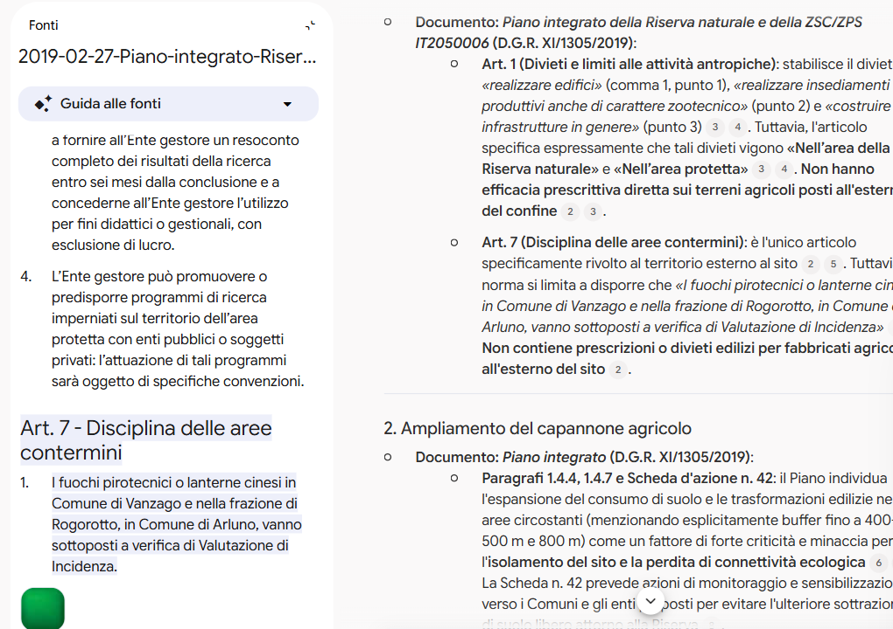
Clicco la citazione: a sinistra si apre l'art. 7 evidenziato nel piano
Dalle fonti, un audio da ascoltare in macchina
Notebook reale «Adattamento climatico in Lombardia» · 39 fonti
Le fonti, per gruppi
5
Piano nazionale di adattamento (PNACC)
Il piano diviso nelle sue parti:
Documento di pianoAll. I · piani regionaliAll. II · piani localiAll. III · impatti e vulnerabilità
7
DNSH
Il Vademecum diviso in quaderni, più la guida ai programmi 2021-2027:
Documento di azione, linee guida PACC, due DGR, rapporto di sintesi
2
Commissione europea
Orientamenti tecnici sulla verifica climatica
19
Un progetto reale
Studio d'impatto e 18 relazioni specialistiche
Gli audio generati · formato approfondimento
▶
Logistica clima-resiliente: guida pratica per progettare hub e DNSH in Lombardia20 fonti scelte su 39
32'
▶
Polo logistico: luci e ombre tra mitigazione, resilienza e standard europei39 fonti
21'
▶
Progetti infrastrutturali a prova di clima: dal PNRR al progetto, tra norme e realtà39 fonti
19'
▶
Resilienza climatica negli aeroporti senza verde39 fonti · un anno dopo, nuovo incarico
21'
01 · SCEGLIERETutte le fonti o solo quelle che servono
02 · CHIEDEREOverview audio → approfondimento, con il progetto nelle istruzioni
20-30 minuti di approfondimento, da ascoltare in macchina.
07
Usare l'AI in modo corretto
Dati, verifica, legge, contratto.
Nel dubbio si anonimizza: nomi, particelle, ragioni sociali
Dati personali non necessari: cedolini, documenti d'identità, dati sanitari
Documenti riservati dei clienti su account personali o gratuiti
Credenziali e password
In caso di dubbio: anonimizzare (nomi, particelle, ragioni sociali)
Account personale o aziendale: chi usa le vostre chat
Piani personali
Piani aziendali
Claude
Free, Pro, Max: lo scegliete voi nelle impostazioni sulla privacy. Se acconsentite, le chat restano fino a 5 anni; altrimenti 30 giorni
Team, Enterprise: non usate per l'addestramento
ChatGPT
Free, Plus, Pro: opzione «Migliora il modello per tutti» nei controlli dei dati
Business, Enterprise: escluse per impostazione predefinita
Gemini
Account Google personale: con l'attività salvata, parte delle chat è letta da revisori e usata per migliorare i modelli
Google Workspace aziendale: chat e file non usati senza permesso
Lunedì: aprite le impostazioni sulla privacy di ogni account che usate per lavoro. Disattivare vale per le chat future, non per quelle già usate.
Prima di consegnare: lo firmerei così com'è?
Le norme citate esistono e sono vigenti?
I numeri tornano con i dati di partenza?
Le specie sono corrette per il territorio (liste regionali)?
Ci sono informazioni aggiunte che non avevo fornito?
Il testo lo firmerei così com'è?
Le classifiche non dicono come va sui vostri lavori: provatelo voi
Cinque compiti fissi · presi da questo corso
Mail al cliente con il contesto (S13)
Completezza di una relazione VIncA (S31)
Prescrizioni da un atto (S32)
Specie per una siepe con vincoli (S27)
Scheda di un bando (S36)
Cosa annotare, ogni volta
Ha inventato qualcosa?
Quanti errori ho trovato io?
Quanto tempo ho risparmiato?
Lo firmerei?
Da rifare a ogni nuovo modello o strumento, e comunque ogni sei mesi.
Cambia in fretta: a ottobre per S12 avevamo immaginato una mail generica di tre righe. A novembre il modello ha risposto con undici segnaposto e quattro domande.
Dall'AI al modello Word dello studio
Nel prompt
Scrivi in prosa continua:
niente elenchi puntati,
niente grassetti,
niente titoli.
Lo impagino io.
In Word
Incolla → Mantieni solo testo. Il testo prende gli stili del vostro modello, non quelli della chat.
Oppure il file
Allegate il modello Word dello studio e chiedete un file .docx che usi i suoi stili.
Cosa tradisce il testo dell'AI: elenchi da tre, grassetti ovunque, un titolo per paragrafo, chiuse a effetto.
Per legge l'AI è solo un supporto, e il cliente va informato
L. 23 settembre 2025, n. 132 — art. 13
In vigore dal 10/10/2025
c. 1 — l'AI è ammessa «al solo esercizio delle attività strumentali e di supporto all'attività professionale e con prevalenza del lavoro intellettuale»
c. 2 — «le informazioni relative ai sistemi di intelligenza artificiale utilizzati dal professionista sono comunicate al soggetto destinatario della prestazione intellettuale con linguaggio chiaro, semplice ed esaustivo»
Reg. (UE) 2024/1689 (AI Act) — art. 4
Alfabetizzazione in materia di IA · applicabile dal 02/02/2025
Riscritto dal Reg. (UE) 2026/1744 (Omnibus digitale, in vigore dal 27/07/2026): chi usa l'AI adotta misure volte a sostenere lo sviluppo delle competenze, senza obbligo di garantire un livello specifico.
01La responsabilità resta del professionista
02Il cliente va informato prima, e su quali sistemi
03Formarsi e documentarlo: questo corso ne fa parte
L'uso dell'AI si dichiara nell'incarico, prima della prestazione
Uso di strumenti di intelligenza artificiale (art. 13, L. 132/2025)
Nello svolgimento dell'incarico il Professionista può avvalersi dei seguenti sistemi di intelligenza
artificiale: [ELENCO STRUMENTI], esclusivamente con funzione di supporto all'attività professionale,
per attività quali: redazione di bozze, sintesi e confronto di documenti, controlli di completezza,
elaborazione di immagini illustrative.
Le valutazioni tecniche, le scelte progettuali e il contenuto degli elaborati restano di esclusiva
competenza e responsabilità del Professionista, che ne verifica ogni parte.
I dati del Committente sono trattati nel rispetto della normativa sulla protezione dei dati personali.
Il Committente può chiedere che determinate attività o documenti siano esclusi dall'uso di tali strumenti.
DOVE Nell'offerta o nel disciplinare d'incarico, cioè prima dell'inizio della prestazione. Da far valutare a un legale.
08
Tre cenni sul futuro: vibe coding
Oggi un tecnico può costruirsi un piccolo programma descrivendolo in italiano.
Lo descrivete in italiano, l'AI scrive il programma
01Descrivo cosa mi serve
02L'AI scrive il codice
03Provo
04Correggo a parole
Non si diventa programmatori: si ottengono strumenti su misura per problemi precisi.
DAL VIVO
Otto fonti sulle piante in una sola tabella
Otto fonti di specie in un'unica tabella: abaco Alberi per la città (Emilia-Romagna), ERSAF, Parco delle Groane, Parco del Ticino, guida INFC, Atlante della flora del Parco Agricolo Sud Milano, PlantEX. Si apre con un doppio clic e funziona senza connessione.
01Filtri combinati: fonte, tipo, acqua, luce, lista nera lombarda
02La scheda di una specie con i dati di tutte le fonti
Il lavoro vero è portare l'archivio in un formato che l'AI sa leggere.
Un agente non risponde soltanto: esegue compiti sui vostri file
Esempio di compito
Converti in PDF tutti i Word della cartella della pratica,
rinominali con data e titolo e fammi l'elenco
delle scadenze trovate.
RISCHIOAccesso solo a cartelle dedicate
RISCHIOBackup prima di iniziare
RISCHIOIstruzioni nascoste in siti o documenti
RISCHIOCosti dei piani
L'AI insieme a QGIS
01 · Vi scrive lo strumento
Espressioni del calcolatore di campi, script PyQGIS, modelli di Processing. Li incollate in QGIS e li lanciate voi.
02 · Lavora dentro QGIS
Con un collegamento MCP (S17D), per esempio il plugin QGIS MCP, Claude legge i layer, lancia gli algoritmi e produce la mappa.
Prompt d'esempio · il bosco di S19A
Nel progetto aperto, sul layer «nuovo_bosco»: calcola la superficie in ettari escludendo
radure e strade interne, crea un buffer di 1 km e dimmi quali altri imboschimenti
ricadono dentro, con la superficie di ciascuno. Prima dimmi quale sistema di riferimento usi.
VERIFICA Lavorate su una copia del progetto e guardate il risultato sulla mappa: un sistema di riferimento sbagliato sbaglia tutte le aree.
B
Adesso lavoriamo dal vivo
Caso VIncA · rendering · i vostri casi
DAL VIVO · 20'
P1 · Integrazioni VIncA, dalla PEC alla lettera
1 · Capire la richiesta
Leggi la richiesta di integrazioni della Provincia allegata. Elenca tutte le richieste numerate, riportando per ciascuna il testo esatto e, in una riga, cosa ci viene chiesto di produrre. Alla fine indica il termine per rispondere.
2 · Piano di lavoro
Per ogni richiesta indica: quali documenti del progetto contengono già le informazioni, cosa manca, e se serve una ricerca esterna (sito dell'ente, normativa, formulario del sito). Non scrivere ancora le risposte.
3 · Ricerca
Cerca sul sito della Regione Lombardia o dell'ente gestore le misure di conservazione vigenti del [SITO NATURA 2000] e indicami il documento e il link. Riporta solo fonti ufficiali.
4 · Risposte
Scrivi la risposta alla richiesta n. 1, usando solo le informazioni dei documenti allegati e della fonte trovata. Stile della nostra relazione. Dove manca un dato scrivi [DA COMPLETARE].
5 · Lettera e controllo
Prepara la lettera di accompagnamento alla Provincia con l'elenco delle integrazioni trasmesse. Poi confronta le richieste del passo 1 con le risposte scritte e dimmi se ce n'è qualcuna non coperta o coperta solo in parte.
Caso reale portato da Terraviva, anonimizzato · riserva: screenshot di ogni passo
DAL VIVO · 15'
P2 · Rendering dal vivo
R1 · Inserire la fascia di mitigazione
Nella foto allegata inserisci una fascia boscata di
mitigazione lungo il confine in primo piano:
larghezza circa 10 m, arbusti alti 2-3 m davanti e
alberi alti 8-12 m dietro, specie di latifoglie di
pianura, aspetto naturale e non geometrico.
Mantieni invariati edificio, cielo, luce e
inquadratura. Stile fotografico realistico.
Correzione 1
Gli alberi sono troppo regolari: rendi la
fascia più irregolare, con altezze diverse.
Correzione 2 · R4
Togli la recinzione in primo piano e
lascia tutto il resto uguale.
Correzione 3
Mostra la stessa vista in inverno,
con le latifoglie senza foglie.
DAL VIVO · 20'
P3 · Simulazioni insieme
01Un partecipante descrive un compito reale in due frasi
02Scrivo il prompt ragionando ad alta voce, con la scheda del buon prompt
03Il gruppo guarda il risultato e propone le correzioni
Compiti di riserva
T5 · Sintesi non tecnica
«Trasforma questo capitolo tecnico in una sintesi non tecnica per il pubblico, massimo 300 parole.»
T9 · Relazione agronomica
«Fammi le domande per scrivere una relazione agronomica per [TIPO DI PRATICA].»
G3 · Offerta da appunti
«Da questi appunti di una telefonata prepara una bozza di offerta con attività, tempi e cosa è escluso.»
L'AI ci ruberà il lavoro?
Probabilmente no. Per ora lavoriamo di più.
La scelta è lavorare meglio.
Il tempo risparmiato non sparisce: si sposta · clic su un deposito per spostarci 10 minuti
Sei consigli per non farsi sommergere
01
Prima le domande
«Prima di… fammi delle domande per capire se ne vale la pena.»
02
Selezionare, non moltiplicare
Non tutte le richieste di preventivo meritano un'offerta.
03
Eliminare, delegare, rimandare
Prima di mettere in ordine le attività della giornata.
04
Discutere i compiti ripetitivi
Serve ancora? C'è un modo diverso di ottenere lo stesso risultato?
05
Dal caso singolo al metodo
Profilo dello studio, progetti, skill: la seconda pratica parte dalla prima.
06
Meno fonti, scelte meglio
Disiscriversi, invece di farsi riassumere tutto.
L'AI propone, il tecnico verifica e firma. E decide come usare il tempo risparmiato.
Domande?
Anche i dubbi: sui dati dei clienti, sugli errori, su chi risponde di un testo prodotto con l'AI.
Tre cose da fare domani
01
Il profilo dello studio
Scriverlo e metterlo nelle istruzioni personalizzate.
02
Un progetto
Crearne uno per una pratica in corso.
03
La checklist
Usarla su ogni testo prodotto con l'AI.
L'AI propone, il tecnico verifica e firma.
La dispensa:mett-89.github.io/corso-ai-terraviva Matteo Oliveri · matteo.oliveri@outlook.it Secondo incontro: rivedremo insieme i primi prompt e i problemi incontrati.
← → scorrere · P relatore · N note · F schermo intero · R ricomincia animazione ·
 01
01 03
03 04
04 05
05 06
06 07
07 08
08 B
B